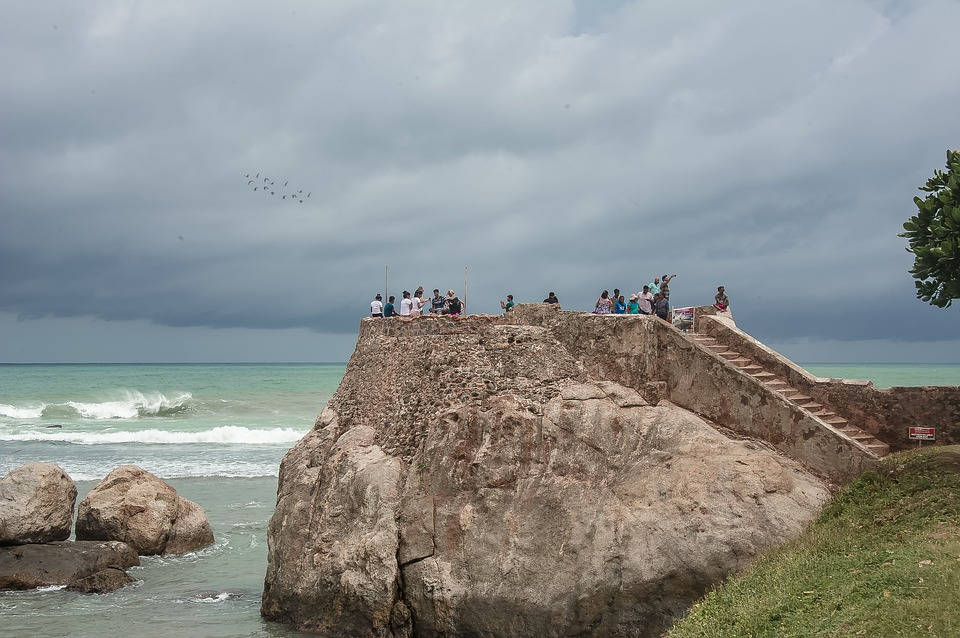

Sri Lanka is one of the most popular romantic places on the planet.
The country of serendipity offers spiritual peace and the opportunity to rediscover oneself.
This little island's beauty is truly breathtaking. It is well-known for its enthralling ancient ruins.
Countless soft-sanded beaches, towering mountains, vibrant festivals, and enticing water sports
The thick wild life, different ethnic groupings, and out-of-this-world warmth from the locals,
Sri Lanka will undoubtedly entice you to return. All of information is brought to you by Sri Lanka travel & tourism.
for you, right at your fingertips, so you may experience the tranquil island for yourself.
- Sri Lanka Tourism & Travel 2022-
Why is Sri Lanka the ideal tourism destination?
Sri Lanka is a country defined by golden beaches, surging waves, misty mountains, powerful elephants, sneaky leopards, giant whales, a grand past, exquisite tea, and kind smiles.
With many sites and scenes bottled up in to a small island,
a traveller could be riding the waves in the dawn and admiring the green carpeted mountains
by dusk. Travel destinations in Sri Lanka provide an array of holiday experience
from sun kissed beach holidays to a marathon of wildlife watching,
adrenaline pumping adventure sports and pilgrimage to some of the oldest cities in the world.
With so many sights and scenes crammed into such a small island, a visitor could be riding the waves in the morning and admiring the green carpeted mountains in the evening. Sri Lanka offers a diverse range of vacation options, from sun-kissed beach vacations to a marathon of wildlife watching, adrenaline-pumping adventure sports, and pilgrimages to some of the world's oldest cities.
Festivals in Sri Lanka are a great way to get a taste of the country's vibrant culture.
Sri Lanka is, in its purest form, a place of festivals, where people enthusiastically celebrate all elements of life. You should know that the Sri Lankan calendar offers 25 public holidays to promote the year-round zeal.
Here are the biggest festivals in Sri Lanka, which you must know about:
- Sinhala and Tamil New Year
- Vesak
- Poson Festival
- Kandy Esala Poya Perahera
- Kataragama Festival
- Vel Festival
- Deepavali
- Duruthu Perahera
- Nallur Festival
- Thai Pongal
Is there a good time to visit Sri Lanka?

It may sound cliched, but Sri Lanka is indeed a year-round vacation destination, albeit the best time to visit is between December and mid-April, when it is considered peak season.
In a nutshell, the differences in weather patterns mean that the best time to visit Sri Lanka is dependent on where you choose to go on the island.
If you want to visit Sri Lanka's east coast and north, the ideal time to go is during the following seasons:
If you're planning on visiting the west, south, or hill country, you should take the following routes: